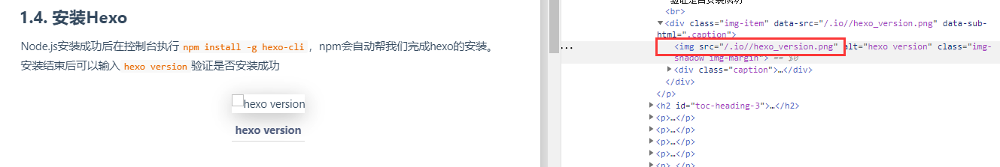

hexo踩坑记录和优化
本地预览图片丢失
当新建了博客编写完后执行hexo g和hexo s预览文章发现所有的图片都丢失了，无法正常加载。chrome中按F12查看发现hexo-asset-image插件没有正确地转换图片地址

而且生成的资源下也不包含任何图片信息。
一开始在这个博客下找到了解决方案。
找到博客根目录下的/node_modules/hexo-asset-image/index.js文件，将其中的代码修改正博客中的代码，贴上代码如下：
'use strict';
var cheerio = require('cheerio');
// http://stackoverflow.com/questions/14480345/how-to-get-the-nth-occurrence-in-a-string--123456794563543543543545435
function getPosition(str, m, i) {
return str.split(m, i).join(m).length;
}
var version = String(hexo.version).split('.');
hexo.extend.filter.register('after_post_render', function(data){
var config = hexo.config;
if(config.post_asset_folder){
var link = data.permalink;
if(version.length > 0 && Number(version[0]) == 3)
var beginPos = getPosition(link, '/', 1) + 1;
else
var beginPos = getPosition(link, '/', 3) + 1;
// In hexo 3.1.1, the permalink of "about" page is like ".../about/index.html".
var endPos = link.lastIndexOf('/') + 1;
link = link.substring(beginPos, endPos);
var toprocess = ['excerpt', 'more', 'content'];
for(var i = 0; i < toprocess.length; i++){
var key = toprocess[i];
var $ = cheerio.load(data[key], {
ignoreWhitespace: false,
xmlMode: false,
lowerCaseTags: false,
decodeEntities: false
});
$('img').each(function(){
if ($(this).attr('src')){
// For windows style path, we replace '\' to '/'.
var src = $(this).attr('src').replace('\\', '/');
if(!/http[s]*.*|\/\/.*/.test(src) &&
!/^\s*\//.test(src)) {
// For "about" page, the first part of "src" can't be removed.
// In addition, to support multi-level local directory.
var linkArray = link.split('/').filter(function(elem){
return elem != '';
});
var srcArray = src.split('/').filter(function(elem){
return elem != '' && elem != '.';
});
if(srcArray.length > 1)
srcArray.shift();
src = srcArray.join('/');
$(this).attr('src', config.root + link + src);
console.info&&console.info("update link as:-->"+config.root + link + src);
}
}else{
console.info&&console.info("no src attr, skipped...");
console.info&&console.info($(this));
}
});
data[key] = $.html();
}
}
});但是这个解决方案其实是有问题
可以看到这里的src资源路径还是错误的。原因是这里的方案只支持Hexo的标签方式(Hexo的标签引用看这里)的引用，对于markdown的引用方式还是不支持。如果把这里的图片引入方式修改为Hexo的标签方式{% asset_img example.jpg This is an example image %}就可以正常显示了。
但是这有一个问题就是使用标签方式在markdown中无法直接预览效果。
所以我就基于这个解决方案做了修改。代码如下：
'use strict';
var cheerio = require('cheerio');
// http://stackoverflow.com/questions/14480345/how-to-get-the-nth-occurrence-in-a-string
function getPosition(str, m, i) {
return str.split(m, i).join(m).length;
}
var version = String(hexo.version).split('.');
hexo.extend.filter.register('after_post_render', function (data) {
var config = hexo.config;
if (config.post_asset_folder) {
var link = data.permalink;
if (version.length > 0 && Number(version[0]) == 3)
var beginPos = getPosition(link, '/', 1) + 1;
else
var beginPos = getPosition(link, '/', 3) + 1;
// In hexo 3.1.1, the permalink of "about" page is like ".../about/index.html".
var endPos = link.lastIndexOf('/') + 1;
link = link.substring(beginPos, endPos);
var beginDir = getPosition(link, "/", 2)
var endDir = link.length
var srcDir = link.substring(beginDir, endDir)
var toprocess = ['excerpt', 'more', 'content'];
for (var i = 0; i < toprocess.length; i++) {
var key = toprocess[i];
var $ = cheerio.load(data[key], {
ignoreWhitespace: false,
xmlMode: false,
lowerCaseTags: false,
decodeEntities: false
});
$('img').each(function () {
if ($(this).attr('src')) {
// For windows style path, we replace '\' to '/'.
var src = $(this).attr('src')
src = src.replace('\\', '/');
var b1 = !/http[s]*.*|\/\/.*/.test(src)
if (b1) {
// For "about" page, the first part of "src" can't be removed.
// In addition, to support multi-level local directory.
var linkArray = link.split('/').filter(function (elem) {
return elem != '';
});
var srcArray = src.split('/').filter(function (elem) {
return elem != '' && elem != '.';
});
if (srcArray.length > 1)
srcArray.shift();
var mSrc = srcArray.join('/');
var realLink = srcDir + mSrc
$(this).attr('src', realLink);
console.info && console.info("update link as:-->" + realLink);
}
} else {
console.info && console.info("no src attr, skipped...");
console.info && console.info($(this));
}
});
data[key] = $.html();
}
}
});这样就可以支持markdown的图片引入了
效果如下：
- 2020-12-31更新
在升级hexo到5.3.0后，又出现了图片获取错误的情况，经过定位原因，把/node_modules、hexo-asset-image/index.js文件修改为以下代码解决问题：
'use strict';
var cheerio = require('cheerio');
// http://stackoverflow.com/questions/14480345/how-to-get-the-nth-occurrence-in-a-string
function getPosition(str, m, i) {
return str.split(m, i).join(m).length;
}
var version = String(hexo.version).split('.');
hexo.extend.filter.register('after_post_render', function (data) {
var config = hexo.config;
if (config.post_asset_folder) {
var link = data.permalink;
var toprocess = ['excerpt', 'more', 'content'];
for (var i = 0; i < toprocess.length; i++) {
var key = toprocess[i];
var $ = cheerio.load(data[key], {
ignoreWhitespace: false,
xmlMode: false,
lowerCaseTags: false,
decodeEntities: false
});
$('img').each(function () {
if ($(this).attr('src')) {
// For windows style path, we replace '\' to '/'.
var src = $(this).attr('src')
src = src.replace('\\', '/');
var b1 = !/http[s]*.*|\/\/.*/.test(src)
if (b1) {
// For "about" page, the first part of "src" can't be removed.
// In addition, to support multi-level local directory.
var linkArray = link.split('/').filter(function (elem) {
return elem != '';
});
var srcArray = src.split('/').filter(function (elem) {
return elem != '' && elem != '.';
});
if (srcArray.length > 1)
srcArray.shift();
var mSrc = srcArray.join('/');
var realLink = mSrc.substring(mSrc.lastIndexOf('/') + 1)
$(this).attr('src', realLink);
console.info && console.info("update link as:-->" + realLink);
}
} else {
console.info && console.info("no src attr, skipped...");
console.info && console.info($(this));
}
});
data[key] = $.html();
}
}
});代码行号丢失
按照官网文档的推荐使用hexo-prism-plugin作为代码高亮插件，但是按照官网的配置发现预览网页中没有行号。
需要做如下修改，打开主题的themes\hexo-theme-matery\source\css\matery.css文件，修改第95~111行如下
pre {
padding: 1.5rem 1.5rem 1.5rem 3.3rem !important;
margin: 1rem 0 !important;
background: #272822;
overflow: auto;
border-radius: 0.35rem;
tab-size: 4;
}
code {
padding: 1px 5px;
font-family: Inconsolata, Monaco, Consolas, 'Courier New', Courier, monospace;
/* font-size: 0.91rem;*/
color: #e96900;
background-color: #f8f8f8;
border-radius: 2px;
}重新生成预览页面就正常了
代码行号错位
当代码中存在较长代码自动换行时会导致代码行号与代码不对应。
使用code-prettify代替
更换代码高亮插件
因为hexo-prism-plugin在行号显示和复制代码丢失缩进和换行的问题，所以决定更换代码高亮插件为code-prettify。
从code-prettifyclone下来最新代码，复制code-prettify\src\prettify.js文件到博客主题的source\js下
然后复制code-prettify\styles\sons-of-obsidian.css文件到博客的source\css下（这里是使用了sons-of-obsidian代码高亮主题，如果要使用默认主题的话就复制code-prettify\src\prettify.css到这个目录下）。
然后打开themes\hexo-theme-matery\layout\_partial\head.ejs文件，增加引用新css的代码
<link rel="stylesheet" href="<%- config.root %>css/sons-of-obsidian.css" media="screen" type="text/css">如果用的是默认的css，这里就设置为对应的css就好了。
另外很重要的一点是这里还需要添加一段style代码：
<style>
li.L0, li.L1, li.L2, li.L3, li.L4, li.L5, li.L6, li.L7, li.L8, li.L9
{ list-style-type: decimal !important }
</style>这其实是为了解决code-prettify的行号bug，不然会出现在代码块中只有一个点但没有代码行号的情况。
接着打开themes\hexo-theme-matery\layout\_partial\footer.ejs文件，增加加载prettify.js的代码：
<script src="<%- config.root %>js/prettify.js"></script>再给pre标签增加prettyprint和linenums这两个css的class
<script type="text/javascript">
$(document).ready(function(){
$('pre').addClass('prettyprint linenums');
prettyPrint();
})
</script>最后要记得把博客根目录下的_config.yml中highlight相关的配置都修改为false
做完这些后就可以执行hexo g和hexo s预览一下效果了，代码块应该是能正常工作了
参考自：
下面是我自己对主题的一些修改:
去除代码隔行背景色
去除代码的隔行不同背景色，把sons-of-obsidian.css里的69~71行代码注释掉。被注释代码如下
li.L1, li.L3, li.L5, li.L7, li.L9 {
background: #111;
}去除代码下背景色
去除每行代码的背景色，通过查看style发现是在matery.css里的pre code里的background-color控制的，所以这里把background-color的alpha值设为0就好了
更正：这里的background-color值应该修改为#00000000，否则在其他背景色下还是能看到。
修复代码块复制后丢失缩进的问题
matery还有这样一个bug，当复制的代码数量大于主题的_config.yml下的copyright中配置的minCharNumber阈值时会导致粘贴时代码丢失缩进，排查后解决方案如下：在themes\hexo-theme-matery\layout\_partial\post-detail.ejs代码中为newdiv增加newdiv.style.whiteSpace = 'pre'属性。
// create a div outside of the visible area and fill it with the selected text.
var bodyElement = document.getElementsByTagName('body')[0];
var newdiv = document.createElement('div');
newdiv.style.position = 'absolute';
newdiv.style.left = '-99999px';
newdiv.style.whiteSpace = 'pre'; //增加这个属性，以防止空格缩进被去除
bodyElement.appendChild(newdiv);
var cloneContents = selection.getRangeAt(0).cloneContents()
newdiv.appendChild(cloneContents);修改代码块背景色
默认的代码背景色是黑色的，看着眼睛不舒服，所以修改为idea的默认背景色#2B2B2B。对代码块检查发现代码块背景色在sons-of-obsidian.css的61行的.prettyprint里的background属性。
所以打开博客根目录下的themes\hexo-theme-matery\source\css\sons-of-obsidian.css，修改 .prettyprint的background属性为#2B2B2B。

修改完成后直接刷新界面就能看到修改后的效果了。
这样看着就舒服多了。
线上博客异常
本地博客push到线上后发现界面排版错误，所有图片无法加载，其实是因为GitHub上的仓库名称命名错误。
仓库名称应该命名为[GitHub name].github.io
更新matery1.2.0导致Bug
刚刚更新了matery的1.2.0版本，导致博客中出现了一些预期之外的bug，下面记录一下具体的Bug和修复记录。
代码块缩放异常
matery1.2.0在代码块中增加了代码块的缩放和复制功能，但是这个功能和code-prettify有冲突，导致缩放代码块时代码消失，但代码行号仍然保留的bug。
通过搜索fas fa-angle-up code-expand发现这个关键字只在themes\hexo-theme-matery\source\libs\codeBlock\codeShrink.js被使用，这里设置了代码缩放按钮的点击事件。
// 代码块收缩
$(function () {
var $code_expand = $('<i class="fas fa-angle-up code-expand" aria-hidden="true"></i>');
$('.code-area').prepend($code_expand);
$('.code-expand').on('click', function () {
if ($(this).parent().hasClass('code-closed')) {
$(this).siblings('pre').find('code').show();
$(this).parent().removeClass('code-closed');
} else {
$(this).siblings('pre').find('code').hide();
$(this).parent().addClass('code-closed');
}
});
});
这里可以看到，在点击事件里在pre标签下查找code标签然后对其做显示和隐藏以实现代码的缩放功能。但是使用了code-prettify后，pre下不是直接包裹code标签，所以原来的代码直接对code标签做处理导致了这个bug。
所以修改这个bug只需要将原来的代码中的find('code')修改为find('ol')就可以了。修改后代码如下：
// 代码块收缩
$(function () {
var $code_expand = $('<i class="fas fa-angle-up code-expand" aria-hidden="true"></i>');
$('.code-area').prepend($code_expand);
$('.code-expand').on('click', function () {
if ($(this).parent().hasClass('code-closed')) {
$(this).siblings('pre').find('ol').show();
$(this).parent().removeClass('code-closed');
} else {
$(this).siblings('pre').find('ol').hide();
$(this).parent().addClass('code-closed');
}
});
});代码块复制Bug
1.2.0新增的代码复制功能和code-prettify也存在兼容问题。使用code-prettify后导致复制按钮只能复制第一行代码。
通过搜索fas fa-copy code_copy找到复制按钮的逻辑在themes\hexo-theme-matery\source\libs\codeBlock\codeCopy.js文件中。
从这里的第50行可以看出，复制功能bug和代码块缩放bug原因是差不多的。
所以将这里的find('code')修改为find('ol')就可以了。
网页末尾的站点总字数丢失
更新1.2.0后网页末尾的站点总字数丢失，在hexo-theme-matery目录下搜索发现源码中是存在对应功能的，在博客根目录的themes\hexo-theme-matery\layout\_partial\footer.ejs下。
这里对theme.wordCount.totalCount的值做了判断，于是到themes\hexo-theme-matery\_config.yml查找wordCount相关配置，发现在wordCount下只有一个`enabled属性。
所以这里为它添加一个wordCount属性。
这样就解决了站点总字数统计丢失的问题
关于页面的图标位置
更新后1.2.0后关于界面上里的文章统计图标出现上移导致文字部分被遮挡的问题。
通过搜索文章发布统计图发现是在themes\hexo-theme-matery\languages\zh-CN.yml中定义的postPublishChart的中文名。再继续搜索postPublishChart发现是在themes\hexo-theme-matery\layout\_widget\post-charts.ejs。在post-charts.ejs中搜索postPublishChart，categoriesChart，top10TagsChart在统计的属性内修改top属性。
修改后如下：